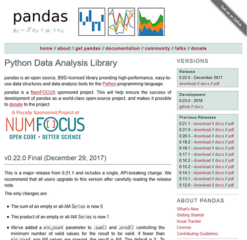

pandas¶
pandas: Python Data Analysis Library
pandas常用于数据分析的预处理中。

习惯上，以名称pd导入。
[1]:
import pandas as pd
import numpy as np
下载道琼斯平均指数数据¶
在美国Yahoo的Finance上，下载道琼斯平均指数数据。
打开道琼斯平均指数链接，将显示2017年的数据。下载「^DJI.csv」文件。
## 装载csv数据
把下载的csv文件，放到与此演示程序相同的路径下，使用load_csv加载文件。
[2]:
dow = pd.read_csv("^DJI.csv")
head: 显示数据开头部分¶
文件数据量大时，可用head只显示数行文件内容。
[3]:
dow.head()
[3]:
| Date | Open | High | Low | Close | Adj Close | Volume | |
|---|---|---|---|---|---|---|---|
| 0 | 2017-01-03 | 19872.859375 | 19938.529297 | 19775.929688 | 19881.759766 | 19881.759766 | 339180000 |
| 1 | 2017-01-04 | 19890.939453 | 19956.140625 | 19878.830078 | 19942.160156 | 19942.160156 | 280010000 |
| 2 | 2017-01-05 | 19924.560547 | 19948.599609 | 19811.119141 | 19899.289063 | 19899.289063 | 269920000 |
| 3 | 2017-01-06 | 19906.960938 | 19999.630859 | 19834.080078 | 19963.800781 | 19963.800781 | 277700000 |
| 4 | 2017-01-09 | 19931.410156 | 19943.779297 | 19887.380859 | 19887.380859 | 19887.380859 | 287510000 |
DataFrame¶
数据类型是DataFrame。pandas最核心的就是Series和DataFrame两个数据结构，序列Series是一维的，DataFrame是2维的。
数据中最上一行是标题，左边一列是添加的索引。
[4]:
type(dow)
[4]:
pandas.core.frame.DataFrame
指定索引列¶
上图中，索引是自动添加的，也可以通过程序指定索引，数据中的Date是时间序列值，在通常的运用中，常作为索引使用。
[5]:
dow = pd.read_csv("^DJI.csv", index_col=0)
[6]:
dow.head()
[6]:
| Open | High | Low | Close | Adj Close | Volume | |
|---|---|---|---|---|---|---|
| Date | ||||||
| 2017-01-03 | 19872.859375 | 19938.529297 | 19775.929688 | 19881.759766 | 19881.759766 | 339180000 |
| 2017-01-04 | 19890.939453 | 19956.140625 | 19878.830078 | 19942.160156 | 19942.160156 | 280010000 |
| 2017-01-05 | 19924.560547 | 19948.599609 | 19811.119141 | 19899.289063 | 19899.289063 | 269920000 |
| 2017-01-06 | 19906.960938 | 19999.630859 | 19834.080078 | 19963.800781 | 19963.800781 | 277700000 |
| 2017-01-09 | 19931.410156 | 19943.779297 | 19887.380859 | 19887.380859 | 19887.380859 | 287510000 |
此处的索引是日期。
describe: 查看简单的统计信息¶
[7]:
dow.describe()
[7]:
| Open | High | Low | Close | Adj Close | Volume | |
|---|---|---|---|---|---|---|
| count | 251.000000 | 251.000000 | 251.000000 | 251.000000 | 251.000000 | 2.510000e+02 |
| mean | 21740.383163 | 21797.332934 | 21688.730772 | 21750.203748 | 21750.203748 | 3.112414e+08 |
| std | 1321.640122 | 1324.098035 | 1322.991591 | 1322.007879 | 1322.007879 | 6.933510e+07 |
| min | 19794.679688 | 19824.140625 | 19677.939453 | 19732.400391 | 19732.400391 | 1.186100e+08 |
| 25% | 20825.545899 | 20854.230468 | 20740.179688 | 20811.280274 | 20811.280274 | 2.695850e+08 |
| 50% | 21434.679688 | 21492.619141 | 21390.000000 | 21414.339844 | 21414.339844 | 2.996700e+08 |
| 75% | 22418.745117 | 22489.445312 | 22386.275390 | 22485.094726 | 22485.094726 | 3.389950e+08 |
| max | 24849.630859 | 24876.070313 | 24797.130859 | 24837.509766 | 24837.509766 | 6.357400e+08 |
数据依次是数据数量、平均值、标准偏差、最小值、25％、50％、75％、最大值。
数据提取¶
一维Series数据，提取开盘价。
[8]:
dow_open = dow["Open"]
[9]:
dow_open.head()
[9]:
Date
2017-01-03 19872.859375
2017-01-04 19890.939453
2017-01-05 19924.560547
2017-01-06 19906.960938
2017-01-09 19931.410156
Name: Open, dtype: float64
数据类型是不同的，我们可以查证一下。
[10]:
type(dow_open)
[10]:
pandas.core.series.Series
从DataFrame中抽取多列¶
在[]中指定列名抽取相应的列。此时，返回类型还是DataFrame。
[11]:
dow_high_low = dow[["High", "Low"]]
dow_high_low.head()
[11]:
| High | Low | |
|---|---|---|
| Date | ||
| 2017-01-03 | 19938.529297 | 19775.929688 |
| 2017-01-04 | 19956.140625 | 19878.830078 |
| 2017-01-05 | 19948.599609 | 19811.119141 |
| 2017-01-06 | 19999.630859 | 19834.080078 |
| 2017-01-09 | 19943.779297 | 19887.380859 |
指定条件行抽取¶
提取高点在$24,000以上的数据。
[12]:
dow[dow["High"] > 24000]
[12]:
| Open | High | Low | Close | Adj Close | Volume | |
|---|---|---|---|---|---|---|
| Date | ||||||
| 2017-11-30 | 24013.800781 | 24327.820313 | 24013.800781 | 24272.349609 | 24272.349609 | 488200000 |
| 2017-12-01 | 24305.400391 | 24322.060547 | 23921.900391 | 24231.589844 | 24231.589844 | 417910000 |
| 2017-12-04 | 24424.109375 | 24534.039063 | 24288.189453 | 24290.050781 | 24290.050781 | 424250000 |
| 2017-12-05 | 24335.009766 | 24349.740234 | 24155.279297 | 24180.640625 | 24180.640625 | 371190000 |
| 2017-12-06 | 24171.900391 | 24229.349609 | 24134.490234 | 24140.910156 | 24140.910156 | 312720000 |
| 2017-12-07 | 24116.599609 | 24262.880859 | 24101.240234 | 24211.480469 | 24211.480469 | 319060000 |
| 2017-12-08 | 24263.259766 | 24330.119141 | 24225.500000 | 24329.160156 | 24329.160156 | 293590000 |
| 2017-12-11 | 24338.109375 | 24389.720703 | 24314.740234 | 24386.029297 | 24386.029297 | 300580000 |
| 2017-12-12 | 24452.960938 | 24552.970703 | 24443.830078 | 24504.800781 | 24504.800781 | 342220000 |
| 2017-12-13 | 24525.189453 | 24666.019531 | 24518.300781 | 24585.429688 | 24585.429688 | 325280000 |
| 2017-12-14 | 24631.009766 | 24672.480469 | 24508.660156 | 24508.660156 | 24508.660156 | 314780000 |
| 2017-12-15 | 24585.710938 | 24688.619141 | 24584.439453 | 24651.740234 | 24651.740234 | 635740000 |
| 2017-12-18 | 24739.560547 | 24876.070313 | 24739.560547 | 24792.199219 | 24792.199219 | 354880000 |
| 2017-12-19 | 24834.380859 | 24850.109375 | 24715.599609 | 24754.750000 | 24754.750000 | 335330000 |
| 2017-12-20 | 24838.089844 | 24852.439453 | 24697.109375 | 24726.650391 | 24726.650391 | 341790000 |
| 2017-12-21 | 24778.259766 | 24850.910156 | 24766.269531 | 24782.289063 | 24782.289063 | 339530000 |
| 2017-12-22 | 24764.039063 | 24784.150391 | 24717.509766 | 24754.060547 | 24754.060547 | 255140000 |
| 2017-12-26 | 24715.839844 | 24778.130859 | 24708.419922 | 24746.210938 | 24746.210938 | 208290000 |
| 2017-12-27 | 24766.519531 | 24789.519531 | 24731.679688 | 24774.300781 | 24774.300781 | 225890000 |
| 2017-12-28 | 24807.210938 | 24839.230469 | 24797.130859 | 24837.509766 | 24837.509766 | 200960000 |
| 2017-12-29 | 24849.630859 | 24871.660156 | 24719.220703 | 24719.220703 | 24719.220703 | 270760000 |
loc：指定标签，iloc：指定位置¶
制作演示数据。
[13]:
np.random.seed(0)
df = pd.DataFrame(np.random.rand(8, 4), columns=["A", "B", "C", "D"])
df
[13]:
| A | B | C | D | |
|---|---|---|---|---|
| 0 | 0.548814 | 0.715189 | 0.602763 | 0.544883 |
| 1 | 0.423655 | 0.645894 | 0.437587 | 0.891773 |
| 2 | 0.963663 | 0.383442 | 0.791725 | 0.528895 |
| 3 | 0.568045 | 0.925597 | 0.071036 | 0.087129 |
| 4 | 0.020218 | 0.832620 | 0.778157 | 0.870012 |
| 5 | 0.978618 | 0.799159 | 0.461479 | 0.780529 |
| 6 | 0.118274 | 0.639921 | 0.143353 | 0.944669 |
| 7 | 0.521848 | 0.414662 | 0.264556 | 0.774234 |
通过loc，指定行列提取。
[14]:
df.loc[3:5, ["B", "C"]]
[14]:
| B | C | |
|---|---|---|
| 3 | 0.925597 | 0.071036 |
| 4 | 0.832620 | 0.778157 |
| 5 | 0.799159 | 0.461479 |
此处，提取index3～5、B列、C列数据。 使用loc时，索引对于3:5是3～5，而使用iloc则为3:5，索引为3和4。
[15]:
df.iloc[3:5, 1:3]
[15]:
| B | C | |
|---|---|---|
| 3 | 0.925597 | 0.071036 |
| 4 | 0.832620 | 0.778157 |
数据加工¶
将C列和D列的和添加到E列。
[16]:
df["E"] = df["C"] + df["D"]
df
[16]:
| A | B | C | D | E | |
|---|---|---|---|---|---|
| 0 | 0.548814 | 0.715189 | 0.602763 | 0.544883 | 1.147647 |
| 1 | 0.423655 | 0.645894 | 0.437587 | 0.891773 | 1.329360 |
| 2 | 0.963663 | 0.383442 | 0.791725 | 0.528895 | 1.320620 |
| 3 | 0.568045 | 0.925597 | 0.071036 | 0.087129 | 0.158165 |
| 4 | 0.020218 | 0.832620 | 0.778157 | 0.870012 | 1.648169 |
| 5 | 0.978618 | 0.799159 | 0.461479 | 0.780529 | 1.242009 |
| 6 | 0.118274 | 0.639921 | 0.143353 | 0.944669 | 1.088022 |
| 7 | 0.521848 | 0.414662 | 0.264556 | 0.774234 | 1.038789 |
A列用B列的二倍值覆盖
[17]:
df["A"] = df["B"] * 2
df
[17]:
| A | B | C | D | E | |
|---|---|---|---|---|---|
| 0 | 1.430379 | 0.715189 | 0.602763 | 0.544883 | 1.147647 |
| 1 | 1.291788 | 0.645894 | 0.437587 | 0.891773 | 1.329360 |
| 2 | 0.766883 | 0.383442 | 0.791725 | 0.528895 | 1.320620 |
| 3 | 1.851193 | 0.925597 | 0.071036 | 0.087129 | 0.158165 |
| 4 | 1.665240 | 0.832620 | 0.778157 | 0.870012 | 1.648169 |
| 5 | 1.598317 | 0.799159 | 0.461479 | 0.780529 | 1.242009 |
| 6 | 1.279842 | 0.639921 | 0.143353 | 0.944669 | 1.088022 |
| 7 | 0.829324 | 0.414662 | 0.264556 | 0.774234 | 1.038789 |
使用at、iat操作单元格¶
[18]:
df.at[1, "A"] = -1
df
[18]:
| A | B | C | D | E | |
|---|---|---|---|---|---|
| 0 | 1.430379 | 0.715189 | 0.602763 | 0.544883 | 1.147647 |
| 1 | -1.000000 | 0.645894 | 0.437587 | 0.891773 | 1.329360 |
| 2 | 0.766883 | 0.383442 | 0.791725 | 0.528895 | 1.320620 |
| 3 | 1.851193 | 0.925597 | 0.071036 | 0.087129 | 0.158165 |
| 4 | 1.665240 | 0.832620 | 0.778157 | 0.870012 | 1.648169 |
| 5 | 1.598317 | 0.799159 | 0.461479 | 0.780529 | 1.242009 |
| 6 | 1.279842 | 0.639921 | 0.143353 | 0.944669 | 1.088022 |
| 7 | 0.829324 | 0.414662 | 0.264556 | 0.774234 | 1.038789 |
[19]:
df.iat[2, 0] = -1
df
[19]:
| A | B | C | D | E | |
|---|---|---|---|---|---|
| 0 | 1.430379 | 0.715189 | 0.602763 | 0.544883 | 1.147647 |
| 1 | -1.000000 | 0.645894 | 0.437587 | 0.891773 | 1.329360 |
| 2 | -1.000000 | 0.383442 | 0.791725 | 0.528895 | 1.320620 |
| 3 | 1.851193 | 0.925597 | 0.071036 | 0.087129 | 0.158165 |
| 4 | 1.665240 | 0.832620 | 0.778157 | 0.870012 | 1.648169 |
| 5 | 1.598317 | 0.799159 | 0.461479 | 0.780529 | 1.242009 |
| 6 | 1.279842 | 0.639921 | 0.143353 | 0.944669 | 1.088022 |
| 7 | 0.829324 | 0.414662 | 0.264556 | 0.774234 | 1.038789 |
缺失值的处理方式¶
缺失值是数据分析中的一个常见问题。制作数据。
[20]:
df["F"] = [1, None, None, 1, None, None, None, None]
df
[20]:
| A | B | C | D | E | F | |
|---|---|---|---|---|---|---|
| 0 | 1.430379 | 0.715189 | 0.602763 | 0.544883 | 1.147647 | 1.0 |
| 1 | -1.000000 | 0.645894 | 0.437587 | 0.891773 | 1.329360 | NaN |
| 2 | -1.000000 | 0.383442 | 0.791725 | 0.528895 | 1.320620 | NaN |
| 3 | 1.851193 | 0.925597 | 0.071036 | 0.087129 | 0.158165 | 1.0 |
| 4 | 1.665240 | 0.832620 | 0.778157 | 0.870012 | 1.648169 | NaN |
| 5 | 1.598317 | 0.799159 | 0.461479 | 0.780529 | 1.242009 | NaN |
| 6 | 1.279842 | 0.639921 | 0.143353 | 0.944669 | 1.088022 | NaN |
| 7 | 0.829324 | 0.414662 | 0.264556 | 0.774234 | 1.038789 | NaN |
F列中反映了None，pandas中缺失值表记为NaN。
dropna: 忽略缺失值¶
利用方法dropna，忽略缺失值
[21]:
df.dropna()
[21]:
| A | B | C | D | E | F | |
|---|---|---|---|---|---|---|
| 0 | 1.430379 | 0.715189 | 0.602763 | 0.544883 | 1.147647 | 1.0 |
| 3 | 1.851193 | 0.925597 | 0.071036 | 0.087129 | 0.158165 | 1.0 |
fillna: 设定缺失值¶
此处，将缺失值设置为0。
[22]:
df.fillna(value=0)
[22]:
| A | B | C | D | E | F | |
|---|---|---|---|---|---|---|
| 0 | 1.430379 | 0.715189 | 0.602763 | 0.544883 | 1.147647 | 1.0 |
| 1 | -1.000000 | 0.645894 | 0.437587 | 0.891773 | 1.329360 | 0.0 |
| 2 | -1.000000 | 0.383442 | 0.791725 | 0.528895 | 1.320620 | 0.0 |
| 3 | 1.851193 | 0.925597 | 0.071036 | 0.087129 | 0.158165 | 1.0 |
| 4 | 1.665240 | 0.832620 | 0.778157 | 0.870012 | 1.648169 | 0.0 |
| 5 | 1.598317 | 0.799159 | 0.461479 | 0.780529 | 1.242009 | 0.0 |
| 6 | 1.279842 | 0.639921 | 0.143353 | 0.944669 | 1.088022 | 0.0 |
| 7 | 0.829324 | 0.414662 | 0.264556 | 0.774234 | 1.038789 | 0.0 |
dropna/fillna并未改动原始数据¶
dropna和fillna都不是破坏性操作（原始值不会被重写）。这是原始数据内容。
[23]:
df
[23]:
| A | B | C | D | E | F | |
|---|---|---|---|---|---|---|
| 0 | 1.430379 | 0.715189 | 0.602763 | 0.544883 | 1.147647 | 1.0 |
| 1 | -1.000000 | 0.645894 | 0.437587 | 0.891773 | 1.329360 | NaN |
| 2 | -1.000000 | 0.383442 | 0.791725 | 0.528895 | 1.320620 | NaN |
| 3 | 1.851193 | 0.925597 | 0.071036 | 0.087129 | 0.158165 | 1.0 |
| 4 | 1.665240 | 0.832620 | 0.778157 | 0.870012 | 1.648169 | NaN |
| 5 | 1.598317 | 0.799159 | 0.461479 | 0.780529 | 1.242009 | NaN |
| 6 | 1.279842 | 0.639921 | 0.143353 | 0.944669 | 1.088022 | NaN |
| 7 | 0.829324 | 0.414662 | 0.264556 | 0.774234 | 1.038789 | NaN |
汇总计算¶
mean: 平均值 /std: 标准偏差¶
[24]:
df.mean()
[24]:
A 0.831787
B 0.669560
C 0.443832
D 0.677766
E 1.121598
F 1.000000
dtype: float64
[25]:
df.std()
[25]:
A 1.170553
B 0.192464
C 0.272506
D 0.283482
E 0.432834
F 0.000000
dtype: float64
通过apply，指定任意函数¶
通过apply，可以指定任意函数，下面是计算各列最大值和最小值之间的差。
[26]:
df.apply(lambda x: x.max() - x.min())
[26]:
A 2.851193
B 0.542155
C 0.720689
D 0.857540
E 1.490004
F 0.000000
dtype: float64
group¶
添加G列分组。
[27]:
df["G"] = ["X", "X", "Y", "Y", "Z", "X", "Z", "Y"]
df
[27]:
| A | B | C | D | E | F | G | |
|---|---|---|---|---|---|---|---|
| 0 | 1.430379 | 0.715189 | 0.602763 | 0.544883 | 1.147647 | 1.0 | X |
| 1 | -1.000000 | 0.645894 | 0.437587 | 0.891773 | 1.329360 | NaN | X |
| 2 | -1.000000 | 0.383442 | 0.791725 | 0.528895 | 1.320620 | NaN | Y |
| 3 | 1.851193 | 0.925597 | 0.071036 | 0.087129 | 0.158165 | 1.0 | Y |
| 4 | 1.665240 | 0.832620 | 0.778157 | 0.870012 | 1.648169 | NaN | Z |
| 5 | 1.598317 | 0.799159 | 0.461479 | 0.780529 | 1.242009 | NaN | X |
| 6 | 1.279842 | 0.639921 | 0.143353 | 0.944669 | 1.088022 | NaN | Z |
| 7 | 0.829324 | 0.414662 | 0.264556 | 0.774234 | 1.038789 | NaN | Y |
把G列的值作为关键字进行分组统计。等效于SQL的GROUP BY。
[28]:
gr = df.groupby("G")
gr.sum()
[28]:
| A | B | C | D | E | F | |
|---|---|---|---|---|---|---|
| G | ||||||
| X | 2.028696 | 2.160242 | 1.501830 | 2.217185 | 3.719015 | 1.0 |
| Y | 1.680517 | 1.723700 | 1.127317 | 1.390258 | 2.517575 | 1.0 |
| Z | 2.945082 | 1.472541 | 0.921510 | 1.814681 | 2.736191 | 0.0 |
求和sum计算的结果。分组键缺省处理是建立索引的。
不想作为索引时，使用as_index=false 指定
[29]:
gr = df.groupby("G", as_index=False)
gr.mean()
[29]:
| G | A | B | C | D | E | F | |
|---|---|---|---|---|---|---|---|
| 0 | X | 0.676232 | 0.720081 | 0.500610 | 0.739062 | 1.239672 | 1.0 |
| 1 | Y | 0.560172 | 0.574567 | 0.375772 | 0.463419 | 0.839192 | 1.0 |
| 2 | Z | 1.472541 | 0.736270 | 0.460755 | 0.907341 | 1.368096 | NaN |
此时，G列是作为通常列进行处理的。
数据的连接/组合¶
首先，准备数据。
[30]:
df1 = pd.DataFrame(np.random.rand(3, 3), columns=["A", "B", "C"])
df1
[30]:
| A | B | C | |
|---|---|---|---|
| 0 | 0.456150 | 0.568434 | 0.018790 |
| 1 | 0.617635 | 0.612096 | 0.616934 |
| 2 | 0.943748 | 0.681820 | 0.359508 |
[31]:
df2 = pd.DataFrame(np.random.rand(3, 3), columns=["A", "B", "C"])
df2
[31]:
| A | B | C | |
|---|---|---|---|
| 0 | 0.437032 | 0.697631 | 0.060225 |
| 1 | 0.666767 | 0.670638 | 0.210383 |
| 2 | 0.128926 | 0.315428 | 0.363711 |
concat: 垂直串联¶
[32]:
df3 = pd.concat([df1, df2])
df3
[32]:
| A | B | C | |
|---|---|---|---|
| 0 | 0.456150 | 0.568434 | 0.018790 |
| 1 | 0.617635 | 0.612096 | 0.616934 |
| 2 | 0.943748 | 0.681820 | 0.359508 |
| 0 | 0.437032 | 0.697631 | 0.060225 |
| 1 | 0.666767 | 0.670638 | 0.210383 |
| 2 | 0.128926 | 0.315428 | 0.363711 |
reset_index: 重置索引¶
虽然串接了，但索引看起来奇怪。重新编制索引，如下：
[33]:
df3.reset_index(drop=True)
[33]:
| A | B | C | |
|---|---|---|---|
| 0 | 0.456150 | 0.568434 | 0.018790 |
| 1 | 0.617635 | 0.612096 | 0.616934 |
| 2 | 0.943748 | 0.681820 | 0.359508 |
| 3 | 0.437032 | 0.697631 | 0.060225 |
| 4 | 0.666767 | 0.670638 | 0.210383 |
| 5 | 0.128926 | 0.315428 | 0.363711 |
drop=True， 表示丢弃旧索引。
merge: 数据结合¶
相当于SQL中的join操作，先在数据中添加结合键数据。
[34]:
df1["D"] = ["A", "B", "D"]
df2["D"] = ["A", "B", "C"]
[35]:
df1
[35]:
| A | B | C | D | |
|---|---|---|---|---|
| 0 | 0.456150 | 0.568434 | 0.018790 | A |
| 1 | 0.617635 | 0.612096 | 0.616934 | B |
| 2 | 0.943748 | 0.681820 | 0.359508 | D |
[36]:
df2
[36]:
| A | B | C | D | |
|---|---|---|---|---|
| 0 | 0.437032 | 0.697631 | 0.060225 | A |
| 1 | 0.666767 | 0.670638 | 0.210383 | B |
| 2 | 0.128926 | 0.315428 | 0.363711 | C |
[37]:
pd.merge(df1, df2, on="D")
[37]:
| A_x | B_x | C_x | D | A_y | B_y | C_y | |
|---|---|---|---|---|---|---|---|
| 0 | 0.456150 | 0.568434 | 0.018790 | A | 0.437032 | 0.697631 | 0.060225 |
| 1 | 0.617635 | 0.612096 | 0.616934 | B | 0.666767 | 0.670638 | 0.210383 |
以D列为key，结合符合条件的A，B两列。相当于SQL的内部结合。
外部结合
[38]:
pd.merge(df1, df2, how="left", on="D")
[38]:
| A_x | B_x | C_x | D | A_y | B_y | C_y | |
|---|---|---|---|---|---|---|---|
| 0 | 0.456150 | 0.568434 | 0.018790 | A | 0.437032 | 0.697631 | 0.060225 |
| 1 | 0.617635 | 0.612096 | 0.616934 | B | 0.666767 | 0.670638 | 0.210383 |
| 2 | 0.943748 | 0.681820 | 0.359508 | D | NaN | NaN | NaN |
相当于SQL中的“Left out join”，没有相应df2行时，使用缺失值填充。
values: 转换为数组类型¶
DataFrame类型数据的各种处理方法，在机器学习的数据预处理时简洁方便。 预处理之后的各种机器学习算法中，通常使用NumPy数组更方便。此时，可使用valuese进行转换。
[39]:
df3.loc[:, ["A", "B", "C"]].values
[39]:
array([[0.45615033, 0.56843395, 0.0187898 ],
[0.6176355 , 0.61209572, 0.616934 ],
[0.94374808, 0.6818203 , 0.3595079 ],
[0.43703195, 0.6976312 , 0.06022547],
[0.66676672, 0.67063787, 0.21038256],
[0.1289263 , 0.31542835, 0.36371077]])
从A，B和C列取值。构成NumPy可以处理的2维数组。
从数据加载开始学习¶
上面，介绍了pandas中最基本的功能。pandas功能很多，熟练后能提高处理效率。有关详细信息，请参阅官方网站。
对于初学者来说，可能不容易上手，从DataLoader开始，逐渐适应不失是个办法。
[ ]: